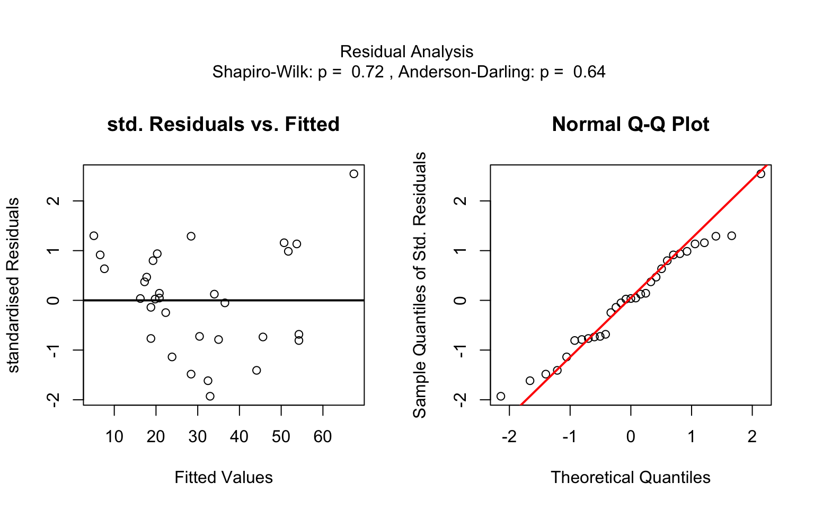
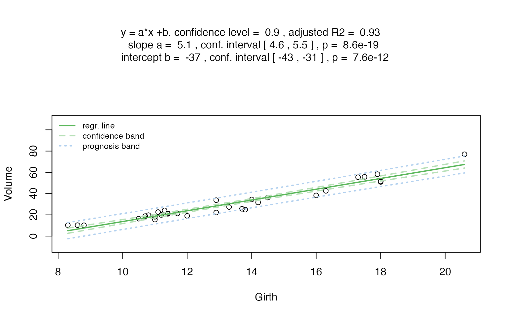
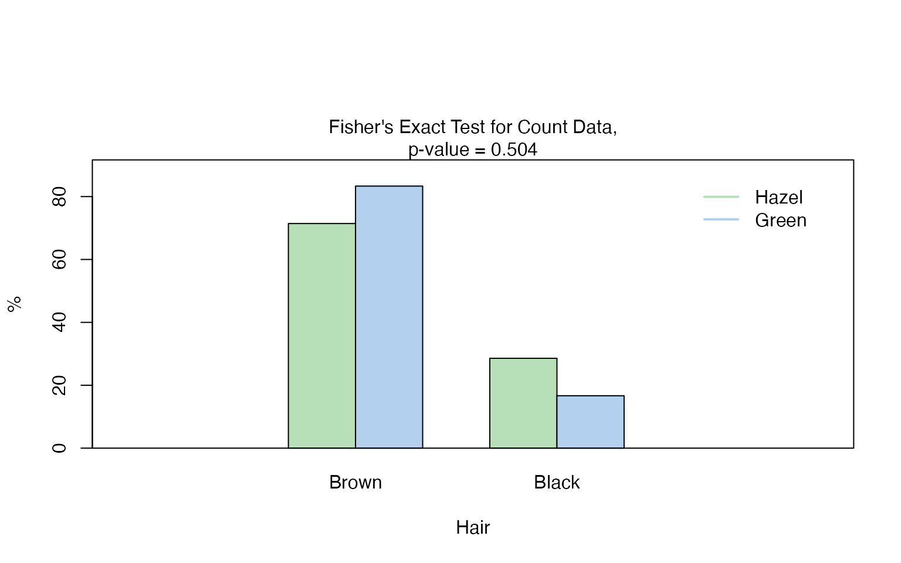
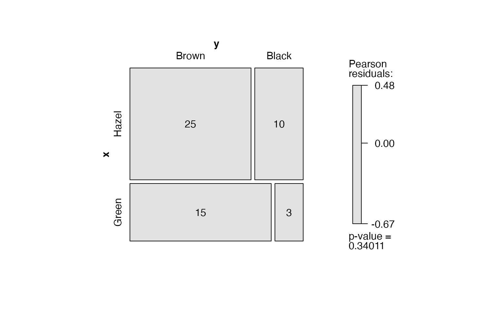

Overview
visStatistics automatically selects and
visualises appropriate statistical
hypothesis tests between a response and a feature variable in a data
frame. The choice of test depends on the class,
distribution, and sample size of the input variables, as well as the
user-defined ‘conf.level’. The main function visstat()
visualises the selected test with appropriate graphs (box plots, bar
charts,regression lines with confidence bands, mosaic plots,residual
plots, Q-Q plots), annotated with the main test results, including any
assumption checks and post-hoc analyses. A minimal function call looks
like:
visstat(dataframe, varsample = "response", varfactor = "feature")The input data.frame must be column-based, and the
response varsample and feature varfactor must
be character strings naming columns of the data.frame.
This scripted workflow is particularly suited for browser-based interfaces that rely on server-side R applications connected to secure databases, where users have no direct access, or for quick data visualisations, e.g. in statistical consulting projects.
The remainder of this vignette is organised as follows:
Section 2 summarises the decision logic of chosing a statistical test, whilst
Sections 3 - 5 visualises the decision logic using examples,
Section 6 gives an overview of the implemented tests.
Decision logic
Throughout the remainder, data of class "numeric" or
"integer" are referred as numeric, while data of class
"factor" are referred to as categorical.The significance
level
,
used throughout for hypothesis testing, is defined as
1 - conf.level, where conf.level is a
user-controllable argument (defaulting to 0.95).
The choice of statistical tests performed by the function
visstat() depends on whether the data are numeric or
categorical, the number of levels in the categorical variable, the
distribution of the data, as well as the user-defined ‘conf.level’.
The function prioritizes interpretable visual output and tests that remain valid under the the fowlloing decision logic:
Numeric response and categorical predictor
When the response is numeric and the predictor is categorical, a statistical hypothesis test of central tendencies is selected.
If the categorical predictor has exactly two levels, Welch’s t - test (
t.test()), is applied whenever both groups contain more than 30 observations, with the validity of the test supported by the approximate normality of the sampling distribution of the mean under the central limit theorem Lumley et al. (2002). For smaller samples, group - wise normality is assessed using the Shapiro - Wilk test (shapiro.test()) at the significance level. If both groups are found to be approximately normally distributed according to the Shapiro - Wilk test, Welch’s t-test is applied; otherwise, the Wilcoxon rank-sum test (wilcox.test()) is used.For predictors with more than two levels, an ANOVA model (
aov()) is initially fitted. The normality of residuals is evaluated using both the Shapiro-’Wilk test (shapiro.test()) and the Anderson-’Darling test (ad.test()); residuals are considered approximately normal if at least one of the two tests yields a result exceeding the significance threshold . If this condition is met, Bartlett’s test (bartlett.test()) is then used to assess homoscedasticity. When variances are homogeneous (), ANOVA is applied with Tukey’s HSD (TukeyHSD()) for post-hoc comparison. If variances differ significantly (), Welch’s one - way test (oneway.test()) is used, also followed by Tukey’s HSD. If residuals are not normally distributed according to both tests (), the Kruskal-Wallis test (kruskal.test()) is selected, followed by pairwise Wilcoxon tests (pairwise.wilcox.test()). A graphical overview of the decision logic used is provided in below figure.

Decision tree used to select the appropriate statistical test for a categorical predictor and numeric response, based on the number of factor levels, normality, and homoscedasticity.
Numerical response and numerical feature
When both the response and predictor are numeric, a simple linear
regression model (lm()) is fitted and analysed in detail,
including residual diagnostics, formal tests, and the plotting of fitted
values with confidence bands. Note that only one
precictor variable is allowed, as the function is designed for
two-dimensional visualisation.
Categorical response and categorical feature
In the case of two categorical variables, visstat()
tests the null hypothesis that the predictor and response variables are
independent using either chisq.test() or
fisher.test(). The choice of test is based on Cochran’s
rule (Cochran 1954), which advises that
theapproximation
is reliable only if no expected cell count is zero and no more than 20
percent of cells have expected counts below 5.
Note:Except for the user - adjustable conf.level
parameter, all statistical tests are applied using their default
settings from the corresponding base R functions (e.g.,
t.test()). As a consequence, paired tests are not currently
supported. Furthermore, since the main purpose of this package is to
visualize statistical test results, only simple linear regression is
implemented.
Sections 3-5 willexplains all the details of the above described decision logic based on examples.
.
Numerical response and categorical feature
If the feature consists of class “factor”
with two or more levels and the response consists is of
class “numerical” or “integer”
(both having mode “numerical”), statistical tests are
applied to compare the central tendencies across groups. This section
describes the conditions under which parametric and non-parametric tests
are chosen, based on the response type, the number of factor levels, and
the underlying distributional assumptions.
Welch’s t-test and Wilcoxon rank sum test
When the feature variable has exactly two levels, Welch’s t-test or the Wilcoxon rank-sum test is applied.
Welch’s t-test
Welch’s t-test assumes that the observations are independent and that the response variable is approximately normally distributed within each group. In contrast to Student’s t-test, it does not require the assumption of equal variances (homoscedasticity) between groups. Welch’s test remains valid and exhibits only minimal loss of efficiency even when the assumptions of Student’s t-test - namely, normality and equal variances of the response variable across groups - are satisfied (Moser and Stevens 1992; Delacre, Lakens, and Leys 2017). Therefore, Student’s t-test is not implemented.
Welch’s t-test evaluates the null hypothesis that the means of two groups are equal without assuming equal variances. The test statistic is given by (Welch 1947; Satterthwaite 1946)
where and are the sample means, and the sample variances, and , the sample sizes in the two groups. The statistic follows a t-distribution with degrees of freedom approximated by the Welch-’Satterthwaite equation:
The resulting p-value is computed from the t-distribution with degrees of freedom.
Wilcoxon rank-sum test
The two-sample Wilcoxon rank-sum test (also known as the
Mann-’Whitney test) (wilcox.test()) is a non-parametric
alternative that does not require the response variable to be
approximately normally distributed within each group. It tests for a
difference in location between two independent distributions (Wilcoxon 1945; Mann and Whitney 1947).
The two-level factor variable varfactor defines two
groups, with sample sizes
and
each. All
observations are pooled and assigned ranks from
to
.
Let
denote the sum of the ranks assigned to the group corresponding to the
first level of varfactor containing
observations. The test statistic returned by visstat() is
then computed as
If both groups contain fewer than 50 observations and the data contain no ties, the p-value is computed exactly. Otherwise, a normal approximation with continuity correction is used.
Test choice and graphical output
visstat selects between Welch’s t-test and the Wilcoxon
rank-sum test as follows. If both groups contain more than 30
observations, Welch’s t-test (t.test()) is always applied,
relying on the central limit theorem to justify its application
regardless of underlying normality (Rasch,
Kubinger, and Moder 2011; Lumley et al. 2002).
If either group contains fewer than 30 observations, the
Shapiro-’Wilk test (shapiro.test()) is applied separately
to each group. Welch’s t-test is used if both tests do not reject
normality at the significance level $$; otherwise, the Wilcoxon rank-sum
test (wilcox.test()) is applied.
The graphical output consists of box plots overlaid with jittered
points to display individual observations. When Welch’s t-test is
applied, the function includes confidence intervals based on the
user-specified conf.level.
The title is structured as follows:
First line: Test name and user selected significance level .
Second line: Null hypotheses automatically adapted based on the user specified
varsampleandvarfacor.Third line: Test statstic, p value and comparison with
The function returns a list containing the results of the applied test and the summary statistics used to construct the plot.
Examples
Welch’s t-test
As an example, we use the Motor Trend Car Road Tests data
set (mtcars), which contains 32 observations. In the
example below, mpg denotes miles per (US) gallon, and
am represents the transmission type (0 =
automatic, 1 = manual).

Increasing the confidence level conf.level from the
default 0.95 to 0.99 results in wider confidence intervals, as a higher
confidence level requires more conservative bounds to ensure that the
interval includes the true parameter value with greater certainty.
mtcars$am <- as.factor(mtcars$am)
t_test_statistics_99 <- visstat(mtcars, "mpg", "am", conf.level = 0.99)
Wilcoxon rank sum test
The Wilcoxon rank sum test is exemplified on an example of differences between the central tendencies of grades of “boys” and “girls” in a class:
grades_gender <- data.frame(
sex = as.factor(c(rep("girl", 21), rep("boy", 23))),
grade = c(
19.3, 18.1, 15.2, 18.3, 7.9, 6.2, 19.4,
20.3, 9.3, 11.3, 18.2, 17.5, 10.2, 20.1, 13.3, 17.2, 15.1, 16.2, 17.0,
16.5, 5.1, 15.3, 17.1, 14.8, 15.4, 14.4, 7.5, 15.5, 6.0, 17.4,
7.3, 14.3, 13.5, 8.0, 19.5, 13.4, 17.9, 17.7, 16.4, 15.6, 17.3, 19.9, 4.4, 2.1
)
)
wilcoxon_statistics <- visstat(grades_gender, "grade", "sex")
One-way test, ANOVA or Kruskal-Wallis test
If the feature is of class “factor” with
more than two levels and the response is of mode
“numerical”, visstat() initially attempts an
analysis of variance (ANOVA). ANOVA is performed only if both of the
following null hypotheses cannot be rejected at the specified
conf.level:
- The standardized residuals follow a normal distribution, and
- The residuals exhibit homoscedasticity (equal variances across groups).
If only the assumption of normality is satisfied,
visstat() applies Welch’s one-way test
(oneway.test()). If the normality assumption is violated, a
Kruskal-W allis test (kruskal.test()) is used instead.
These assumptions are tested internally using the
visAnovaAssumptions() function.
Checking the ANOVA assumptions
Residual analysis
The visAnovaAssumptions() function assesses the
normality of standardized residuals from the ANOVA fit using both the
Shapiro-W ilk test (shapiro.test()) and the
Anderson-Darling test (ad.test()). Normality is assumed if
at least one of the two tests yields a
-value
greater than
.
The function generates two diagnostic plots:
- a scatterplot of the standardized residuals against the fitted means
of the linear model for each level of the feature
(varfactor), and
- a Q-Q plot of the standardized residuals.
Homoscedasticity: homogeneity of variances in each level: Bartlett test
Both aov() and oneway.test() assess whether
two or more samples drawn from normal distributions have the same mean.
While aov() assumes homogeneity of variances across groups,
oneway.test() does not require the variances to be
equal.
Homoscedasticity is assessed using
Bartletts test (bartlett.test()`), which tests the null
hypothesis that the variances across all levels of the grouping variable
are equal.
One-way test and ANOVA
Depending on the
-value
returned by bartlett.test(), the corresponding test is
selected and its
-value
is displayed in the figure title:
- If the
-value
of
bartlett.test()is greater than , we assume homogeneity of variances across groups and report the -value from the ANOVA (aov()). - Otherwise, homoscedasticity cannot be assumed, and the function
reports the
-value
from Welch’s one-way test (
oneway.test()).
Post-hoc analysis: Tukey’s Honestly Significant Differences (HSD) and Sidak-corrected confidence intervals
Simple pairwise comparisons of group means following an analysis of variance increase the probability of incorrectly declaring a significant difference when, in fact, there is none .
This inflation of error is quantified by the family-wise error rate, which refers to the probability of making at least one Type I error, that is, falsely rejecting the null hypothesis across all pairwise comparisons.
To control it, visstat() performs post-hoc analysis
using Tukey’s Honestly Significant Difference (HSD) test and displays
Sidak-corrected confidence intervals.
The visstat() function controls the probability of a
Type I error by applying Tukey`s Honestly Significant Differences
procedure, as implemented in TukeyHSD().
Based on the specified confidence level (conf.level), it
constructs a set of confidence intervals for all pairwise differences
between factor level means. A significant difference between two means
is indicated when the corresponding confidence interval does not include
zero.
The function returns both the HSD-adjusted
-values
and the associated confidence intervals for all pairwise
comparisons.
In the graphical output for the one-way test and ANOVA, green letters displayed below each group summarize the results of the Tukey HSD post-hoc test: Two groups are considered significantly different if they are assigned different letters, indicating a Tukey HSD-adjusted -value smaller than .
Tukey`s HSD procedure is based on pairwise comparisons of the differences between the means at each factor level and produces a set of corresponding confidence intervals. The Sidak procedure, on the other hand, addresses the problems of a type I error by lowering the acceptable probability of a type I error for all comparisons of the levels of the independent, categorical variable.
The Sidak corrected acceptable probability of error (Šidák 1967) is defined as
-conf.int,
where
is the number of pairwise comparisons of the
levels of the categorical variable.
In the graphical display of One-way test and ANOVA,
visstat() displays both the conf.level
-confidence
intervals alongside the larger, Sidak-corrected
-confidence
intervals.
Note that the current structure of visstat() does not
allow the study of interactions between the different levels of an
independent variable.
Kruskal-Wallis test
If the
-value
from the Shapiro-Wilk test (shapiro.test()) applied to the
standardized residuals is smaller than the significance level
,
visstat() selects a non-parametric alternative: the
Kruskal-Wallis rank sum test.
The function kruskal.test() tests the null hypothesis
that the group medians are equal across all levels of the categorical
feature.
Post-hoc analysis:
pairwise.wilcox.test()
As post-hoc analysis following the Kruskal-Wallis test,
visstat() applies the pairwise Wilcoxon rank sum test using
pairwise.wilcox.test(), with Holm-s method as the default
adjustment for multiple comparisons (Holm
1979).
If the Holm-adjusted
-value
for a given pair of groups is smaller than the significance level
conf.level, the green letters displayed below the
corresponding box plots will differ. Otherwise, the groups are
considered not significantly different.
Apart from the multiple comparison adjustment, the graphical representation of the Kruskal-Wallis result is similar to that used for the Wilcoxon rank sum test.
The function returns a list containing the test statistic from the Kruskal-Wallis rank sum test, along with the Holm-adjusted -values for all pairwise comparisons.
Examples
One-way test
The npk dataset reports the yield of peas (in pounds per
block) from an agricultural experiment conducted on six blocks. In this
experiment, the application of three different fertilisers - nitrogen
(N), phosphate (P), and potassium (K) - was varied systematically. Each
block received either none, one, two, or all three of the
fertilisers,
oneway_npk <- visstat(npk, "yield", "block")

Normality of residuals is supported by graphical diagnostics (scatter
plot of standardized residuals, Q-Q plot) and formal tests (Shapiro-Wilk
and Anderson-Darling, both with
).
However, homogeneity of variances is not supported at the given
confidence level
(,
bartlett.test()), so the
-value
from the variance-robust oneway.test() is reported.
Post-hoc analysis with TukeyHSD() shows no significant
yield differences between blocks, as all share the same group label
(e.g., all green letters).
ANOVA example
The InsectSprays dataset reports insect counts from
agricultural experimental units treated with six different insecticides.
To stabilise the variance in counts, we apply a square root
transformation to the response variable.
insect_sprays_tr <- InsectSprays
insect_sprays_tr$count_sqrt <- sqrt(InsectSprays$count)
visstat(insect_sprays_tr, "count_sqrt", "spray")

After the transformation, the homogeneity of variances can be assumed
(
as calculated with the bartlett.test()), and the
-value
of the aov() is displayed.
Kruskal-Wallis rank sum test
The iris dataset contains petal width measurements (in
cm) for three different iris species.
visstat(iris, "Petal.Width", "Species")

In this example, scatter plots of the standardised residuals and the Q-Q plot suggest that the residuals are not normally distributed. This is confirmed by very small -values from both the Shapiro-Wilk and Anderson-Darling tests.
If both
-values
are below the significance level
conf.level,
visstat() switches to the non-parametric
kruskal.test(). Post-hoc analysis using
pairwise.wilcox.test() shows significant differences in
petal width between all three species, as indicated by distinct group
labels (all green letters differ).
Numerical response and numerical feature
Simple linear regression
If the feature varfactor and the response
varsample have only one level of type
numerical or integer, visstat()
performs a simple linear regression. Note that multiple linear
regression is not implemented, as the main focus of
visstat() is the visualisation of statistical tests.
If the feature varfactor and the response
varsample contain only one level each and both are of type
numerical or integer, visstat()
performs a simple linear regression. Note that multiple linear
regression is not implemented, as the main focus of
visstat() is on the visualisation of statistical tests.
Residual analysis
visstat() checks the normality of the standardised
residuals from lm() both graphically and using the
Shapiro-Wilk and Anderson-Darling tests. If the
-values
for the null hypothesis of normally distributed residuals from both
tests are smaller than
conf.int,
the title of the residual plot will display the message: “Requirement of
normally distributed residuals not met”.
Regardless of the result of the residual analysis,
visstat() proceeds to perform the regression. The title of
the graphical output indicates the chosen confidence level
(conf.level), the estimated regression parameters with
their confidence intervals and
-values,
and the adjusted
.
The plot displays the raw data, the fitted regression line, and both the
confidence and prediction bands corresponding to the specified
conf.level.
visstat() returns a list containing the regression test
statistics, the
-values
from the normality tests of the standardised residuals, and the
pointwise estimates of the confidence and prediction bands.
Examples
Data set: cars
The cars dataset reports the speed of cars in miles per
hour (speed) and the stopping distance in feet
(dist).
linreg_cars <- visstat(cars, "dist", "speed")

Increasing the confidence level conf.level from the
default 0.95 to 0.99 results in wider confidence and prediction
bands:
linreg_cars <- visstat(cars, "dist", "speed", conf.level = 0.99)

-values
greater than conf.level in both Anderson-Darling normality
test and the Shapiro-Wilk test of the standardised residuals indicate
that the normality assumption of the residuals underlying the linear
regression is met.
linreg_trees <- visstat(trees, "Volume", "Girth", conf.level = 0.9)

Data set: trees
The trees dataset provides measurements of the diameter
(Girth, in inches), Height (in feet), and
Volume (in cubic feet) of black cherry trees. In this
example, we choose Volume as the response and
Girth as the feature.
linreg_cars <- visstat(trees, "Volume", "Girth", conf.level = 0.9)
Both the graphical analysis of the standardised residuals and
-values
greater than
conf.level
in the Anderson-Darling and Shapiro-Wilk tests suggest that the
assumption of normally distributed residuals is met. Furthermore, the
linear regression model explains 93% of the total variance in the
response variable Volume.
Categorical response and categorical feature
When both varfactor and varsample are
categorical (i.e., of class factor), visstat()
tests the null hypothesis that the two variables are independent.
Observed frequencies are typically arranged in a contingency table,
where rows index the levels
of the response variable and columns index the levels
of the feature variable. The test statistic, from which the
-value
is derived, is based on the deviation between the observed counts
and the expected counts
under the null hypothesis of independence.
If the expected frequencies are sufficiently large - specifically, if
at least 80% of the cells have expected counts greater than 5 and no
expected count is zero - the function uses Pearson’s
-test
(chisq.test()).
Otherwise, it switches to Fisher’s exact test
(fisher.test()) (Cochran
1954). For 2-by-2 contingency tables, Yate’s a continuity
correction (Yates 1934) is applied to
Pearson’s
-test.
Graphical output: Grouped column plot and mosaic plot
For both
-
and Fisher Test visstat() displays a grouped column plot
that includes the respective test’s
-value
in the title, as well as a mosaic plot showing Pearson residuals.
Mosaic plots
Mosaic plots provide a graphical representation of contingency tables, where the area of each tile is proportional to the observed cell frequency. To aid interpretation, tiles are coloured based on Pearson residuals from a chi-squared test of independence. These residuals measure the standardised deviation of observed from expected counts under the null hypothesis of independence, with the residual for each cell defined as where is the observed count in a cell and the expected count.
Positive residuals (shaded in blue) indicate observed counts greater
than expected, while negative values suggest underrepresentation (shaded
in red). Colour shading thus highlights which combinations of
categorical levels contribute most to the overall association. For
further details see the documentation of mosaic() in the
vcd package.
Data preparation: Transforming a contingency table to
data.frame
Contingency tables can be converted to the required column-based
data.frame using the helper function
counts_to_cases().It transforms the contingency table
HairEyeColor into data.frame named
HairEyeColorDataFrame.
HairEyeColorDataFrame <- counts_to_cases(as.data.frame(HairEyeColor))Pearson’s -test
hair_eye_color_df <- counts_to_cases(as.data.frame(HairEyeColor))
visstat(hair_eye_color_df, "Hair", "Eye")

The graphical output shows that the null hypothesis of Pearson’s test - namely, that hair colour and eye colour are independent - must be rejected at the default significance level (). The mosaic plot indicates that the strongest deviations are due to overrepresentation of individuals with black hair and brown eyes, and of those with blond hair and blue eyes. In contrast, individuals with blond hair and brown eyes are the most underrepresented.
Pearson’s -test with Yate’s continuity correction
For 2-by-2 contingency tables, visstat() applies Yate’s
continuity correction (Yates:1934a?) when computing
the
test statistic. In the following example, we restrict the data to
participants with either black or brown hair and either brown or blue
eyes, resulting in a 2-by-2 contingency table.
hair_black_brown_eyes_brown_blue <- HairEyeColor[1:2, 1:2, ]
# Transform to data frame
hair_black_brown_eyes_brown_blue_df <- counts_to_cases(as.data.frame(hair_black_brown_eyes_brown_blue))
# Chi-squared test
visstat(hair_black_brown_eyes_brown_blue_df, "Hair", "Eye")
 Also in this reduced data set we reject the null hypothesis of
independence of the hair colors “brown” and “black” from the eye colours
“brown” and ” blue”.
Also in this reduced data set we reject the null hypothesis of
independence of the hair colors “brown” and “black” from the eye colours
“brown” and ” blue”.
Fisher’s exact test
Again, we extract a 2-by-2 contingency table from the full dataset, this time keeping only male participants with black or brown hair and hazel or green eyes.
Pearson’s test applied to this table would yield an expected frequency less than 5 in one of the four cells (25% of all cells), which violates the requirement that at least 80% of the expected frequencies must be 5 or greater (Cochran 1954).
Therefore, visstat() automatically selects Fisher’s
exact test instead.
hair_eye_color_male <- HairEyeColor[, , 1]
# Slice out a 2 by 2 contingency table
black_brown_hazel_green_male <- hair_eye_color_male[1:2, 3:4]
# Transform to data frame
black_brown_hazel_green_male <- counts_to_cases(as.data.frame(black_brown_hazel_green_male))
# Fisher test
fisher_stats <- visstat(black_brown_hazel_green_male, "Hair", "Eye")
Saving the graphical output
All generated graphics can be saved in any file format supported by
Cairo(), including “png”, “jpeg”, “pdf”, “svg”, “ps”, and
“tiff” in the user specified plotDirectory. In the
following example, we store the graphics in png format in
the plotDirectory tempdir(). The file names
reflect the statistical test used and the variable names involved.
#Graphical output written to plotDirectory: In this example
# a bar chart to visualise the Chi-squared test and mosaic plot showing Pearson's residuals.
#chi_squared_or_fisher_Hair_Eye.png and mosaic_complete_Hair_Eye.png
visstat(black_brown_hazel_green_male, "Hair", "Eye",
graphicsoutput = "png", plotDirectory = tempdir())Remove the graphical output from plotDirectory:
file.remove(file.path(tempdir(), "chi_squared_or_fisher_Hair_Eye.png"))
file.remove(file.path(tempdir(), "mosaic_complete_Hair_Eye.png"))Implemented tests
Numerical response and categorical feature
When the response is numerical and the feature is categorical, test of central tendencies are selected:
t.test(), wilcox.test(),
aov(),
oneway.test(),kruskal.test()
Normality assumption check
shapiro.test() and ad.test()
Post-hoc tests
-
TukeyHSD()(foraov()andoneway.test()) -
pairwise.wilcox.test()(forkruskal.test())
Numerical response and numerical feature
When both the response and feature are numerical, a simple linear regression model is fitted:
Categorical response and categorical feature
When both variables are categorical, visstat() tests the
null hypothesis of independence using one of the following:
-
chisq.test()(default for larger samples) -
fisher.test()(used for small expected cell counts based on Cochran’s rule)